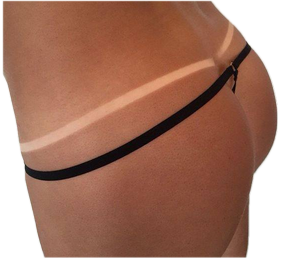
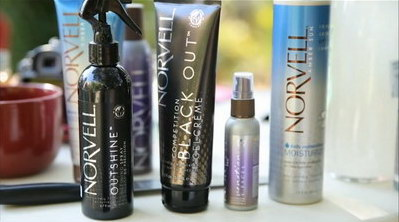

TANITY,
AZ UV MENTES BARNULÁS

Vége a nyárnak, a napsütésnek és a barna bőrnek..., de nem nálam!
Lepd meg a párod egy vadítóan szexi csokibarna testtel, vagy jelenj meg egy eseményen úgy, ahogyan azelőtt még soha.
A Tanity egy egészséges és azonnali módja a gyönyörű és természetes barna bőrnek. UV-mentes barnulást biztosít, egészségesen és biztonságosan, akár 10 perc alatt, az USA díjazott és vezető barnító kozmetikumaival.
Mi is ez?
Egy igen gyors (kb. 10 perces) természetes barnító eljárás. Kizárólag a Norvell cég által gyártott és forgalmazott kiváló minőségű anyagokat használom.
Miért jobb ez, mint a szolárium, vagy a napozás?
Mert UV-mentes, azaz teljesen biztonságos, ezért nem károsítja a bőrödet. Egy speciális cukor-származékkal készült oldatot fújok a bőrödre ami (a DHA-Dihydroxy-actone) reakcióba lép a bőröd felső hámrétegében található aminosavakkal és így alakul ki a természetes nyári barnaságot idéző gyönyörű barna bőr.
Az oldat bőrfelületre juttatását követően a barna szín azonnal látható, míg a DHA általi tartós barnaság néhány óra alatt alakul ki teljesen.
Az elért szín teljes mértékben vízálló és általában 7-10 napig tart a bőr hidratáltságától és az előkezelésétől függően. A bőr csupán 4-5 nap után, a hámsejtek cserélődését követően kezd el fokozatosan fakulni!
